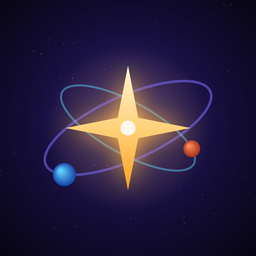

JHHHGAMESPolítica de privacidad de Fusión Estelar
Última actualización: 10 de noviembre de 2026
Fusión Estelar es un juego publicado por JHHHGAMES, desarrollador independiente de Costa Rica (en adelante, "nosotros"). Esta política explica qué datos se usan cuando juegas y qué derechos tienes.
Datos que guardamos en tu teléfono
Si no usas el guardado en la nube, no guardamos ningún dato tuyo fuera de tu teléfono. Tu progreso (puntos, polvo estelar, masa estelar, fondos, mundos conquistados, misiones y el apodo que elijas) se guarda solo en tu teléfono. Si borras la app o sus datos, ese progreso se pierde. En Android, el sistema puede incluir esos datos en la copia de seguridad de tu cuenta de Google.
Guardado en la nube (opcional)
Si tocas "Guarda tu progreso en la nube" y entras con tu cuenta de Google o de Apple, guardamos en los servidores de Google Firebase:
- Un identificador de tu cuenta y el correo que Google o Apple nos comparten (con Apple puedes ocultar tu correo real).
- Tu progreso del juego: polvo estelar, masa estelar, mundos, fondos, misiones, compras realizadas, apodo y fecha de la última copia.
Lo usamos solo para que recuperes tu progreso en otro teléfono. No lo vendemos, no lo usamos para publicidad y no lo compartimos con nadie más. Se guarda mientras tengas la cuenta; si la borras, se elimina. Los servidores de Firebase pueden estar en Estados Unidos.
Cómo borrar tu cuenta y tus datos
- Desde el juego: menú → "Progreso guardado en la nube" → "Borrar mi cuenta y la copia en la nube" → toca otra vez para confirmar. Se borran al instante tu cuenta y tu copia en la nube. El progreso de tu teléfono no se toca.
- Sin el juego: escribe a scorpionjmna@gmail.com con el asunto "Borrar mi cuenta de Fusión Estelar" desde el correo de tu cuenta. La borramos en un máximo de 5 días hábiles y te avisamos.
Anuncios (Google AdMob)
El juego muestra anuncios de Google AdMob. Para mostrarlos, medirlos y prevenir fraudes, Google puede recoger el identificador de publicidad de tu dispositivo, tu dirección IP (de la que se deduce una ubicación aproximada), información del dispositivo, datos de diagnóstico y cómo interactúas con los anuncios. Estos datos los trata Google y pueden procesarse en Estados Unidos.
- En Europa, el Reino Unido y otras regiones, te pedimos tu consentimiento antes de mostrar anuncios personalizados.
- En iPhone, el sistema te pregunta si permites el seguimiento. Si dices que no, el juego sigue funcionando con anuncios no personalizados.
- Puedes cambiar o retirar tu consentimiento en cualquier momento desde el mensaje de privacidad del juego, cuando aplique en tu región, o restableciendo el identificador de publicidad en los ajustes de tu teléfono.
Más información: cómo usa Google los datos de las apps que usan sus servicios.
Compras dentro del juego
Las compras de polvo estelar las procesa Google Play o la App Store. Nosotros no vemos ni guardamos los datos de tu tarjeta.
Menores de edad
El juego no está dirigido a menores de 13 años y no recoge a sabiendas datos de ellos. Los anuncios están limitados a contenido apto para adolescentes.
Tus derechos
Según la Ley 8968 de Protección de la Persona frente al Tratamiento de sus Datos Personales de Costa Rica y otras leyes aplicables, puedes pedir acceso, corrección o eliminación de tus datos. Puedes borrar tu cuenta y tu copia en la nube como se explica arriba, y borrar el progreso del teléfono desinstalando la app. Para los datos que trata Google, puedes usar las herramientas de tu cuenta de Google. Respondemos cualquier solicitud gratis y en un máximo de 5 días hábiles.
Cambios
Si cambiamos esta política, actualizaremos la fecha de arriba. Si agregamos funciones que recojan nuevos datos (por ejemplo, un ranking en línea), lo avisaremos dentro del juego.
Contacto
Para cualquier pregunta sobre privacidad escribe a scorpionjmna@gmail.com.